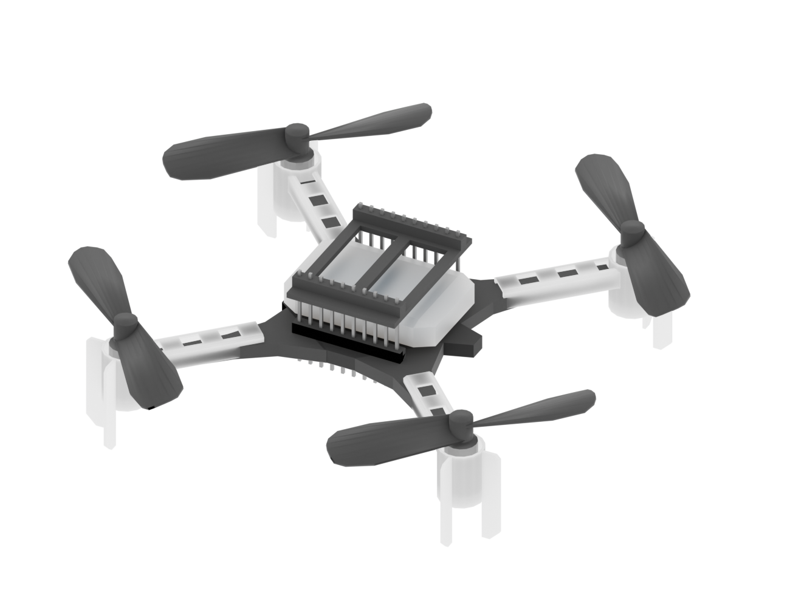
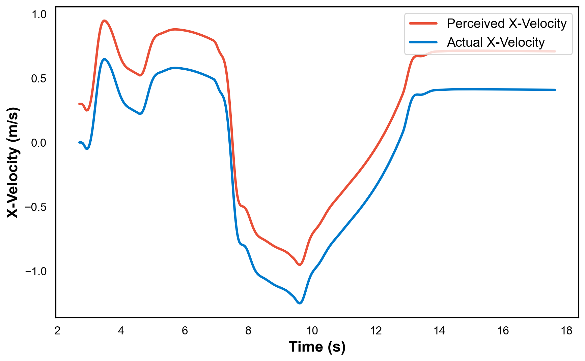
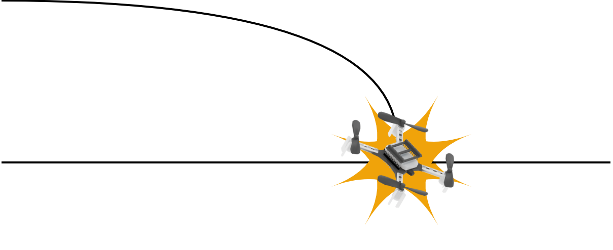
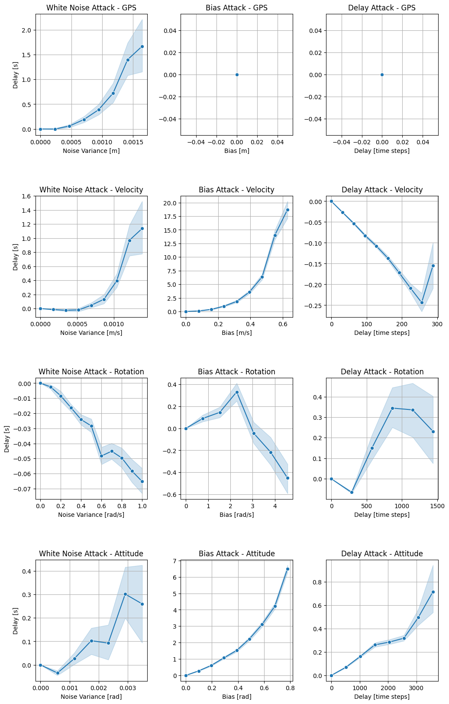
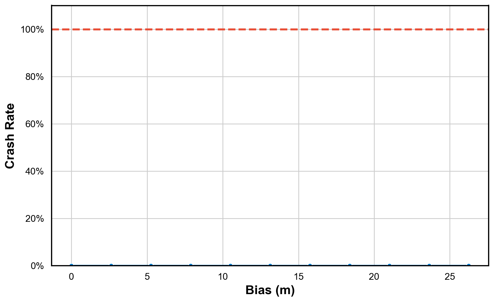
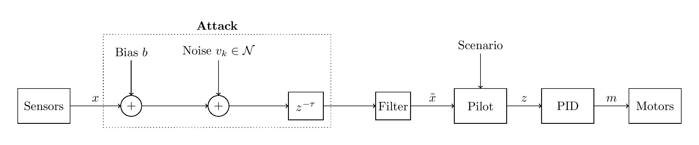

Cyber Attacks Against Autonomous Vehicles
By Josef Anhede and Simon Grindberg
Preview!
Top Gun
- 3D Environment
- Drone with motors, liftoff
- Show motor plot
- Show sensor plot
What?
- Simulate drones carrying out missions
- Simulate attacks on drones
- Analyze the impact of attacks
Why?
Use of drones in armed conflict has skyrocketed
Anti-drone-systems are becoming more sophisticated
Stop hijack or misuse of drones by malicious actors
How?
Webots
- 3D Scene
- Physics Engine
- Sensors and Motors

Webots
- 3D Scene
- Physics Engine
- Sensors and Motors
Drone
- Crazyflie 2.1
- Virtual model
- Sensors and Motors

Webots
- 3D Scene
- Physics Engine
- Sensors and Motors
Drone
- Crazyflie 2.1
- Virtual model
- Sensors and Motors
Controller
- Reads sensors
- PID
- Outputs per motor force
Motors
GPS gives position and velocity
$\vec{p}=[x, y, z]$
$\vec{v}=[\.x, \.y, \.z]$
Accelerometer gives linear acceleration
$\vec{a}=[a_1, a_2, a_3]$
Inertial Unit gives attitude
$\vec{\Theta}=[\phi, \theta, \psi]$
Gyroscope gives angular velocity
$\vec{\omega}=[\omega_1, \omega_2, \omega_3]$

Sensors
GPS gives position and velocity
$\vec{p}=[x, y, z]$
$\vec{v}=[\.x, \.y, \.z]$
Accelerometer gives linear acceleration
$\vec{a}=[a_1, a_2, a_3]$
Inertial Unit gives attitude
$\vec{\Theta}=[\phi, \theta, \psi]$
Gyroscope gives angular velocity
$\vec{\omega}=[\omega_1, \omega_2, \omega_3]$

Types of attacks
Bias Attacks
Adds constant bias $\,b\,$
$$
\begin{align*}
\tilde{x}&=x+b
\end{align*}
$$

Noise Attacks
Adds white-noise $\,v_k \sim \mathcal{N}(0, \sigma^2)$
$$
\begin{align*}
\tilde{x}_k &= x_k+v_k
\end{align*}
$$

Delay Attacks
Delays the signal by $\,\tau\,$ steps
$$
\begin{align*}
\tilde{x}_k = x_{k-\tau} \\
\end{align*}
$$

How do we quantify how "effective" an attack is?
Crash Rate
Run 200 random missions, how many crashed?
$$
\begin{align*}
z& < 5 \, \text{cm} \\
\end{align*}
$$

Delay
Compare attack time vs optimal time
 $$
\begin{align*}
\text{Delay} &= t_{attack} - t_{optimal} \\
\end{align*}
$$
$$
\begin{align*}
\text{Delay} &= t_{attack} - t_{optimal} \\
\end{align*}
$$
Deviation
Compare attack route vs optimal route
$$
\begin{align*}
&\text{Deviation} = \sqrt{ \frac{1}{N} \sum_{k=1}^N (\min_{j} \left\| \vec{p}_k - \vec{p}^*_j \right\|_2)^2 } \\
\approx &\;\text{Average distance to closest point on optimal path} \\
\end{align*}
$$
MANY Results



GPS Bias Attack


GPS Noise Attack

Why is the GPS so sensitive?
GPS is a critical component of autonomous vehicles, providing real-time location data. However, it is also vulnerable to various types of attacks, including jamming and spoofing.
These attacks can disrupt the vehicle's navigation system, leading to potential accidents or loss of control.
How can we improve GPS robustness?
EMA
Full System
